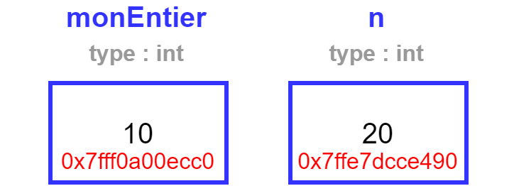

class: center, middle # Programmation procédurale : # les fonctions <img height="200px" src="img/logo.png"> --- ## On parle de quoi ? 1. <a href="UAA11-ch5.html#3">Qu'est ce qu'une fonction ?</a> 2. <a href="UAA11-ch5.html#4">Prototype d'une fonction</a> 3. <a href="UAA11-ch5.html#5">Implémentation d'une fonction</a> 4. <a href="UAA11-ch5.html#6">Variable locale</a> 5. <a href="UAA11-ch5.html#7">Appel d'une fonction</a> 6. <a href="UAA11-ch5.html#8">Vue d'ensemble</a> 7. <a href="UAA11-ch5.html#9">Fonction et condition</a> 8. <a href="UAA11-ch5.html#11">Passage par copie</a> 9. <a href="UAA11-ch5.html#13">Récursivité</a> --- ## Qu'est-ce qu'une fonction ? Une **fonction** est un ensemble d'instructions réalisant une **certaine tâche**. → elles permettent de découper le programme en **modules**. Tout programme bien écrit est modularisé : ```da ┌─── * Prix d'entrée │ Obtenir dateNaissance │ Obtenir statut │ │ o──────────────o ↓ dateNaissance, statut │ │ calculerPrix │ │ o──────────────o ↓ prix │ │ Sortir prix └────────── ``` --- ## Prototype d'une fonction Le **prototype** d'une fonction (ou signature) est une sorte de **"contrat"** passé entre le programmeur qui écrit la fonction et celui qui l'utilise. Prototyper une fonction c'est définir : * son **nom** : l'identifiant unique de la fonction * ses **entrées** : les arguments que doit recevoir la fonction pour être utilisée * sa **sortie** : ce que la fonction va renvoyer (mot-clé `return`) comme résultat Exemple : quelles sont les entrées et quelle est la sortie des fonctions suivantes ? ```c void direBonjour(void); void calculerPrix(int age, char statut); int calculerSomme(int tabEntiers[], int taille); float obtenirReel(void); ``` --- ## Implémentation d'une fonction L'**implémentation** d'une fonction consiste à écrire (coder) son contenu en respectant son prototype (contrat). Exemple : ```c void direBonjour(void){ printf("Bonjour !"); } int calculerSomme(int tabEntiers[], int taille){ int somme = 0; for(int i = 0; i < taille; i++){ somme += tabEntiers[i]; } return somme; } float obtenirReel(void){ return 1.2; } ``` --- ## Variable locale Une ** variable locale** est une variable définie à l'intérieur d'un bloc (fonction , répétitive, etc.). → un emplacement dans la mémoire est alloué à chaque passage dans le bloc → cet emplacement est libéré quand le bloc est terminé Exemple : ```c for(int i = 0; i < 10; i++){ // ici, la variable i existe } // ici, la variable i n'existe pas ``` Question : quel sera l'affichage ? ```c int i = 50; for(int i = 0; i < 10; i++){ printf("%d", i); } printf("%d", i); ``` --- ## Appel d'une fonction L'**appel** consiste à utiliser une fonction quelque part dans le code. → une même fonction peut être appelée plusieurs fois, c'est justement ça l'objectif ! Pour appeler une fonction il faut : * renseigner son nom (rappel : il est unique) * fournir des arguments en respectant le contrat (prototype) Exemple : ```c void main(void){ int mesNombres[] = {5,7,5,6,4,7}; // deux entrées et une sortie int somme = calculerSomme(mesNombres, 6); // une sortie mais pas d'entrée float monReel = obtenirReel(); // pas d'entrée et pas de sortie direBonjour(); } ``` --- ## Vue d'ensemble ```c int calculerSomme(int tab, taille); void main(void){ int mesNombres[] = {5,7,5,6,4,7}; int somme = calculerSomme(mesNombres, 6); } int calculerSomme(int tabEntiers[], int int taille){ int somme = 0; for(int i = 0; i < taille; i++){ somme += tabEntiers[i]; } return somme; } ``` --- ## Fonction et condition Il est possible de simplifier le code suivant. Comment ? ```c bool estUnOperateur(char op){ bool test = false; switch(op){ case '+' : test = true; break; case '-' : test = true; break; case '*' : test = true; break; case '/' : test = true; break; } return test; } ``` --- ## Fonction et condition Code simplifié : ```c bool estUnOperateur(char op){ return (op == '+' || op == '-' || op == '*' || op == '/'); } ``` Utilisation : ```c char operateur; printf("Entrez un operateur\n"); operateur = getchar(); while(!estUnOperateur(operateur)){ printf("Veuillez entrer un operateur valide !\n"); operateur = getchar(); } ``` --- ## Passage par copie En C, le passage d'une variable contenant un type primitif en argument d'une fonction se fait **toujours par copie**. → <span style="color:red">lors de l'appel de la fonction, une copie des arguments est passé à la fonction</span> --- ## Passage par copie ```c void ajouteDix(int n); void main (void){ int monEntier = 10; ajouteDix(monEntier); printf("%d", monEntier); // monEntier = 10 } void ajouteDix(int n){ n = n + 10; } ```  --- ## Passage par copie Comment faire pour réellement modifier l'entier ? ```c int ajouteDix(int n); void main (void){ int monEntier = 10; monEntier = ajouteDix(monEntier); printf("%d", monEntier); // monEntier = 20 } int ajouteDix(int n){ return n + 10; } ``` --- ## Récursivité 🤯 Une **fonction récursive** est une fonction qui s'appelle elle-même. Le but ? Simplifier le code. → <span style="color:red">une fonction récursive contient toujours une condition d'arrêt !</span> ```c int factorielle(int n); void main (void){ int n; scanf_s("%d", &n); while (n < 0){ scanf_s("%d", &n); } printf("%d", factorielle(n)); } int factorielle(int n){ return (n == 0) ? 1 : n * factorielle(n-1); } ```